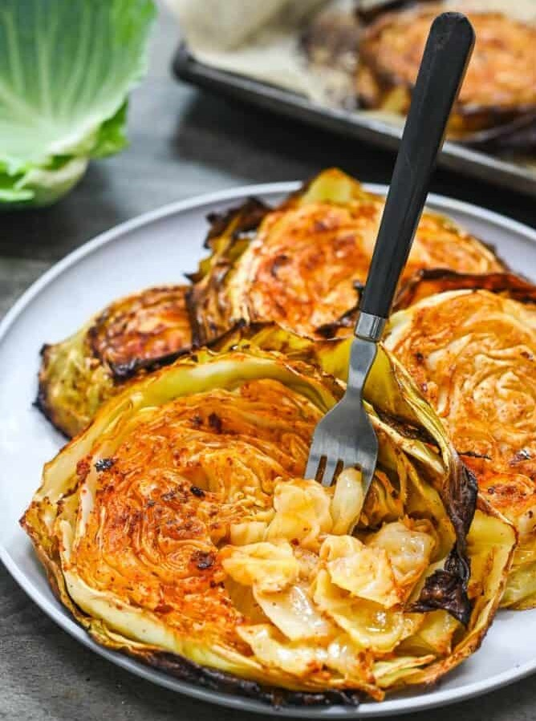

Cabbage Steaks

Cabbage Steak
This is a savory cabbage side dish. This recipe is very easy to make
and takes very little time to prepare.
Ingredients
- 1 Head of Cabbage
- 1/4 Cup Olive Oil
- Salt
- Garlic Powder
- Paprika
- Red Pepper Flakes *Optional*
Steps
- Preheat oven to 400 degrees.
- Wash the head of cabbage and dry it with a towel. Then, Cut the
stems off of the cabbage. Next, cut the cabbage in half. Finally,
cut each half in half again. Each section should be 3/4-inch to
1-inch thick
- Take your baking sheet and line it with parchment paper. Next,
place the cabbage sections on the parchment paper and allow some
space around each one.
- Brush each cabbage section with olive oil until they are all coated
thoroughly.Next, sprinkle each section with salt, garlic powder,
and paprika.
- Flip the cabbage sections over and repeat Step 4. Add a pinch of
red pepper flakes to each one if desired.
- Put the cabbage sections into the oven at 400 degrees for about 25
minutes, until the leaves are browned and the center is tender. Serve
hot out of the oven.